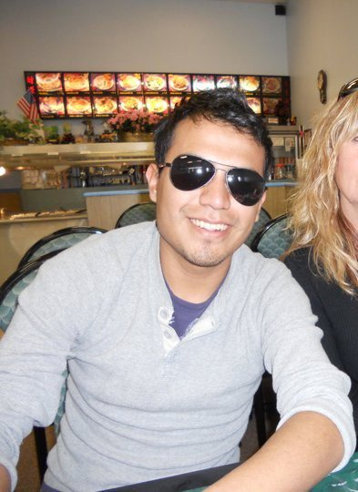

Who are these PPL… Eric Thut
The PPL is diverse, by definition: we are bloggers, photojournalists, artists and entrepreneurs of varied ages and backgrounds committed to supporting independent media during the 2012 DNC. But let’s get a little more specific.
So who are these PPL, anyway? In this five-question series, you’ll get the quick-and-dirty on the folks making this thing happen.
Name: Eric Thut
Years in Charlotte: 2 weeks, but looking forward to spending at least one more in September.
Who are these PPL… Sean Lampton
The PPL is diverse, by definition: we are bloggers, photojournalists, artists and entrepreneurs of varied ages and backgrounds committed to supporting independent media during the 2012 DNC. But let’s get a little more specific.
So who are these PPL, anyway? In this five-question series, you’ll get the quick-and-dirty on the folks making this thing happen.

Name: Sean Lampton (check out his intro video HERE)
Years in Charlotte: I have been living in Charlotte for two years now.
Claim to fame: In the future, I see myself working in news production. Someday, I would like to work in live television.
What are you looking forward to at the DNC: The
DNC is coming up this September and I am looking forward to meeting all of the people. There will be such a diverse group of people in Charlotte during that time which I hope to network with. The DNC will let me apply my skills to make a difference in the world of politics.
Why are you a part of the PPL: I have come to intern with the PPL to
learn the industry standards of video production. I look forward to providing a new look into new media. I believe the PPL is a great place that encourages new ideas.
Who are these PPL: Jeff Wilber
The PPL is diverse, by definition: we are bloggers, photojournalists, artists and entrepreneurs of varied ages and backgrounds committed to supporting independent media during the 2012 DNC. But let’s get a little more specific.
So who are these PPL, anyway? In this five-question series, you’ll get the quick-and-dirty on the folks making this thing happen.
Name: Jeffrey Wilber (Jeff)
Years in Charlotte: About a month, but I have visited family here my whole life.
Claim to fame: Co-founded a website called The Kitty Litter, an online forum for Western Carolina Students to voice honest opinions without being ignored (In the first two hours we drove 4,000 hits to the site). I am also working on a children’s book about boogers.
What are you looking forward to at the DNC: The opportunity to network with political figures, and nationally recognized members of the press.
Why are you a part of the PPL: I knew that I could contribute to this effort. I use a quote from comedian Steve Martin to explain why I want to write, he says, “Some people have a way with words, others, just don’t seem to have a way with words I suppose.” I know that I have a way with words, and my effort was best suited for the PPL.
Who are these PPL: Jill Bjers
The PPL is diverse, by definition: we are bloggers, photojournalists, artists and entrepreneurs of varied ages and backgrounds committed to supporting independent media during the 2012 DNC. But let’s get a little more specific.
So who are these PPL, anyway? In this five-question series, you’ll get the quick-and-dirty on the folks making this thing happen.
Name: Jill Bjers
Years in Charlotte: I’m originally from Salt Lake City, I moved to Charlotte almost a year and a half ago. I love it back home but always had this strange mix of leaving home (Salt Lake City) to come home (Charlotte) from the first time I visited.
Claim to fame: That depends on who you ask, if you ask my son he will gleefully tell you about how I started chatting up band members of his favorite band, introduced him to them, then we all went to waffles together after the show. If you ask my fiance he will tell you about how I was kidnapped by Alice Cooper and taken to Vegas for dinner. But mostly, I’m an over-educated travel junkie that manages to get paid for writing anything that pops in my mind and stumbled into a job with free flights.
I played a small part in organizing culture and hospitality for the 2002 Olympics in Salt Lake. I have organized and participated in many community events and initiatives. Currently I’m one of BarCamp Charlotte’s organizers and a civic volunteer throughout Charlotte.
What are you looking forward to at the DNC: It is hard to narrow that one down. I love meeting new people and getting the chance to hear what they are passionate about. I’m excited to see Charlotte in the spotlight and have every confidence the rest of the country will see what I did the first time I came here. And, also, everything!
Why are you a part of the PPL: I’m a firm advocate of how community, people and accessibility of information can bring about social good. The PPL is working to bring all of those aspects to the DNC, with the tools to empower the independent media. I’m excited to see a group of individual bloggers show the world they truly are a community and have their voices heard. I sincerely believe this convention can change the way the political parties view independent media and reshapes the conversation.
Who are these PPL: Ann Woo
The PPL is diverse, by definition: we are bloggers, photojournalists, artists and entrepreneurs of varied ages and backgrounds committed to supporting independent media during the 2012 DNC. But let’s get a little more specific.
So who are these PPL, anyway? In this five-question series, you’ll get the quick-and-dirty on the folks making this thing happen.
Watch her introduction video here, you won’t want to miss this one!
Name: Ann Woo
Years in Charlotte: 16
Claim to fame: I went to a birthday party that was on the MTV show “My Super Sweet 16” and had a line that was aired…went something along the lines of “OMG she got a brand new Lexus! I hate her!”
What are you looking forward to at the DNC: All the people and attention it is going to bring to Charlotte
Why are you a part of the PPL: It allows me to explore many of my interests- politics, entrepreneurship, event planning, etc.
Who are these PPL: Heather Stallings
The PPL is diverse, by definition: we are bloggers, photojournalists, artists and entrepreneurs of varied ages and backgrounds committed to supporting independent media during the 2012 DNC. But let’s get a little more specific.
So who are these PPL, anyway? In this five-question series, you’ll get the quick-and-dirty on the folks making this thing happen.

Name: Heather Stallings (check out her intro video HERE)
Years In Charlotte: 3
Claim to Fame: Public Relations Intern at The PPL
What are you looking forward to at the DNC: Seeing what Charlotte can do as a city to represent itself nationally, other than NASCAR.
Why are you a part of The PPL: To motivate my generation to use their voice, we have the ability to make more of an impact than ever before.
Ready to get started? Registration is open and filling up quickly. Sign up today!